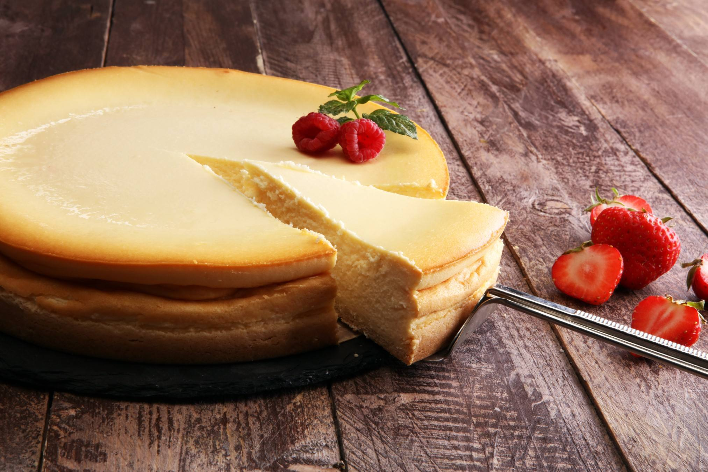

Como hacer el mejor pay de queso

Ingredientes
- 1 paquete de galletas María
- 1 barra de mantequilla
- 1 paquete de queso crema
- 5 huevos
- 1 lechera
- 1 cucharadita de esencia de vainilla
- taza de crema espesa
Instrucciones
- En un recipiente coloca las galletas Marías con la barra de mantequilla y mezcla hasta formar una pasta suave. Colócala en tu molde para pay y espárcela con tus dedos hasta que el fondo y bordes de este queden completamente cubiertos.
- En el mismo recipiente donde creaste la base (puede ser otro si así lo prefieres), coloca el queso crema, los huevos, la lechera, la vainilla y la crema y con la batidora mezcla hasta que todo se integre.
- Vacía sobre la base de galleta y coloca el recipiente en el horno a 180º por 45 minutos, aproximadamente. Una vez transcurrido el tiempo retira del horno, espera a que se enfríe un poco y sirve.
regresar